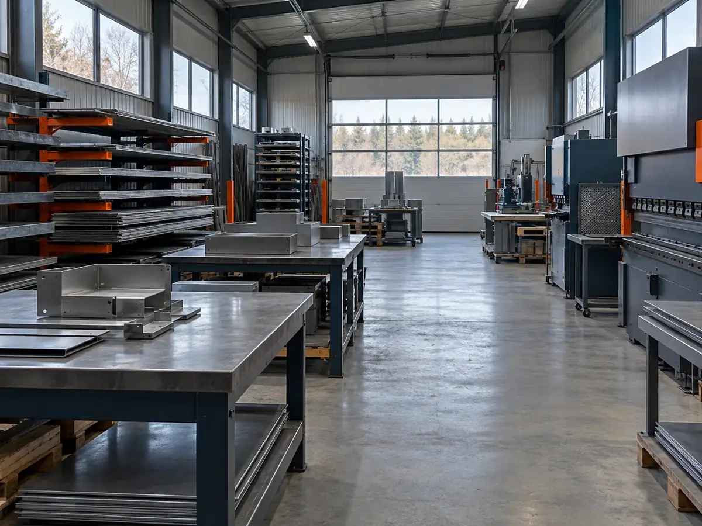
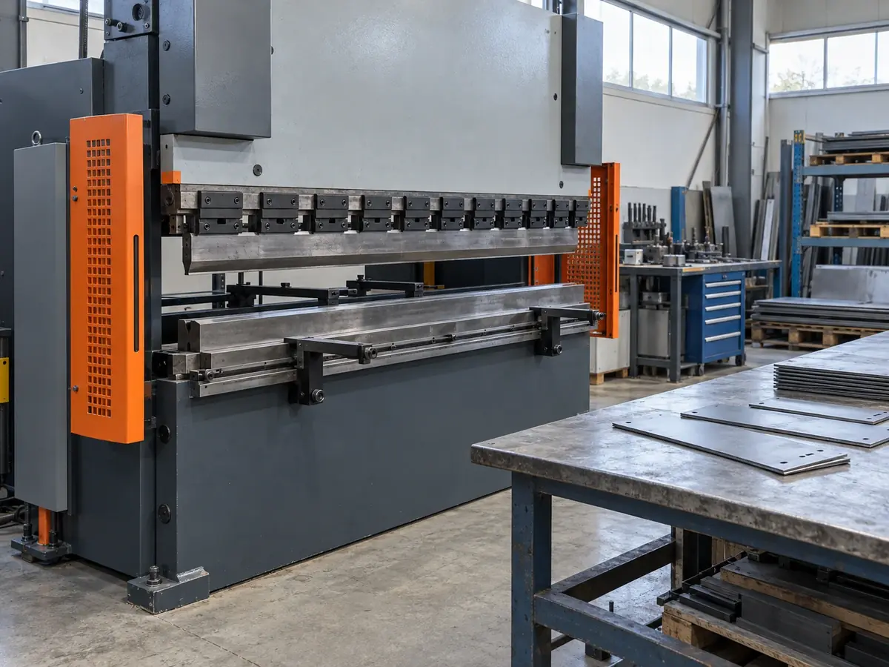

加工範囲・設備
工程ごとに、板厚・最大寸法・公差の目安を表にしています。工程と材質で絞り込めます。
- 切断の最大寸法
- 1,200×2,400mm
- 曲げ長さ
- 2,000mmまで
- 公差の目安
- ±0.1mm〜
- レーザー切断t0.5–6
- ベンダー曲げt0.5–3.2
- TIG溶接t0.8–4
- スポット溶接t0.5–2
- タップ・バーリングt1–3.2
加工別の仕様表
12件中 12件を表示しています
| 加工 | 材質 | 板厚(mm) | 最大寸法(mm) | 公差の目安(mm) | 備考 |
|---|---|---|---|---|---|
| レーザー切断 | 鉄 | t0.5〜6.0 | 1,200×2,400 | ±0.1 | 穴径は板厚以上 |
| レーザー切断 | ステンレス | t0.5〜4.5 | 1,200×2,400 | ±0.1 | 切断面に焼けが出ます |
| レーザー切断 | アルミ | t0.8〜4.0 | 1,200×2,400 | ±0.15 | A5052が中心 |
| レーザー切断 | 銅（C1100） | t0.5〜1.6 | 要相談 | 要相談 | 反射が強い材のため、形状を見て判断 |
| ベンダー曲げ | 鉄 | t0.5〜3.2 | 長さ 2,000 | ±0.2 / 角度±0.5° | 内R は板厚程度 |
| ベンダー曲げ | ステンレス | t0.5〜3.0 | 長さ 2,000 | ±0.2 / 角度±0.5° | スプリングバックを見込みます |
| ベンダー曲げ | アルミ | t0.8〜3.0 | 長さ 2,000 | ±0.2 / 角度±1° | 割れやすい材は要相談 |
| TIG溶接 | 鉄・ステンレス | t0.8〜4.0 | 1,000×1,000 | 歪み取り込み | 溶接後の仕上げは別途 |
| TIG溶接 | アルミ | t1.5〜4.0 | 600×600 | 要相談 | 形状により不可あり |
| スポット溶接 | 鉄・ステンレス | t0.5〜2.0 | 2枚合計 4.0 | — | ナットの溶接にも対応 |
| 試作一式 | 鉄・ステンレス・アルミ | t0.5〜4.5 | 上記の範囲 | 上記の範囲 | 1個から。組立前の単品まで |
| タップ・バーリング | 鉄・ステンレス・アルミ | t1.0〜3.2 | M3〜M8 | — | 二次加工として |
公差は形状・板厚・数量で変わる目安で、保証値ではありません。厳しい公差が必要な箇所は、図面に指示してください。
設備

| 設備 | 台数 | 能力の目安 |
|---|---|---|
| レーザー切断機 | 1 | 加工範囲 1,250×2,500mm、鉄 t6.0 まで |
| ベンダー（曲げ機） | 2 | 最大曲げ長さ 2,000mm／1,250mm |
| TIG溶接機 | 2 | 鉄・ステンレス・アルミ（交流・直流） |
| スポット溶接機 | 1 | 2枚合計 t4.0 まで |
| タップ盤 | 1 | M3〜M8 |
| 測定具 | — | ノギス・ハイトゲージ・角度計・定盤での寸法検査 |
次に読む材質と板厚（8材質×8板厚の対応表）
図面・数量・希望納期があれば見積もりできます。
見積もりを依頼する（見本）